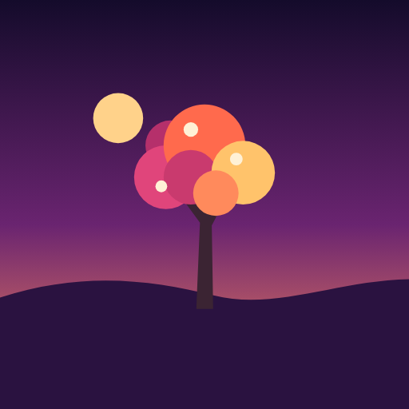

Tree Steps
An illustrated tree that grows with the steps you walk, in the app, as a widget or as your wallpaper. Keep your goal streak going and animals move in.

An illustrated tree that grows with the steps you walk, in the app, as a widget or as your wallpaper. Keep your goal streak going and animals move in.